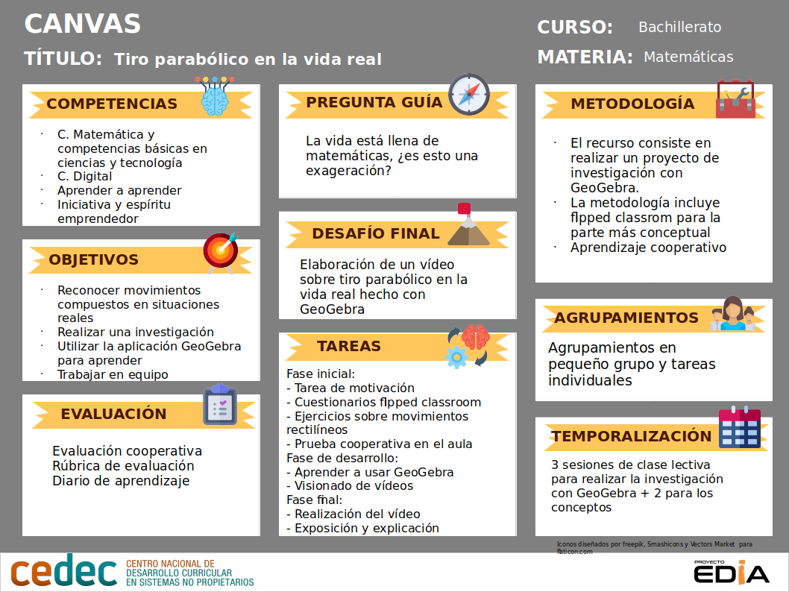
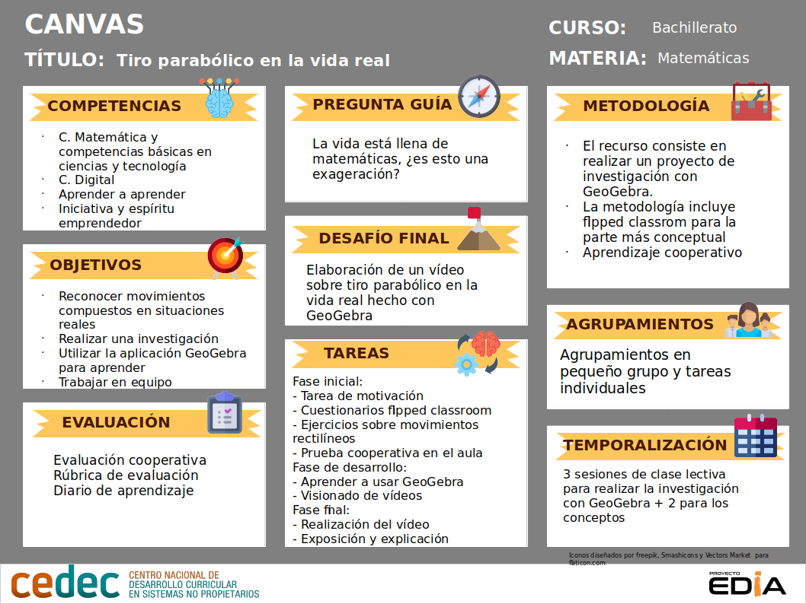

Canvas de proyecto


El Flipped Classroom es un modelo pedagógico que transfiere el trabajo de determinados procesos de aprendizaje fuera del aula y utiliza el tiempo de clase para facilitar y potenciar otros procesos de adquisición y práctica de conocimientos dentro de la misma. “Flippear” una clase es mucho más que la edición y distribución de un video. Se trata de un enfoque que pretende dinamizar las actividades que hacemos en clase, y, en mi caso, crucial para hacer viable el trabajo cooperativo y el trabajo por proyectos. En este sentido, he de reconocer que sí, ahora mismo, puedo dedicar tiempo en el aula a trabajar por proyectos es gracias a que he trasladado las “clases magistrales” fuera del aula, si no, al menos para mí, sería inviable; debo aclarar que cuando indico que los estudiantes ven las explicaciones de física (o de matemáticas) en casa con posterioridad tiene lugar en clase el correspondiente feedback que me permite conocer el aprendizaje que los estudiantes han adquirido con los vídeos.
En este proyecto existe, por parte de los alumnos, una labor de investigación, reflexión personal y generación de contenidos. Así, las herramientas que vamos a utilizar para evaluarlos son:
Los criterios de evaluación son el referente para evaluar los aprendizajes de los alumnos, y describen lo que se quiere conseguir con los contenidos y actividades propuestas. Estos son los criterios de evaluación para este proyecto:
Describe el movimiento de un cuerpo a partir de sus vectores de posición, velocidad y aceleración en un sistema de referencia dado.
Obtiene las ecuaciones que describen la velocidad y la aceleración de un cuerpo a partir de la expresión del vector de posición en función del tiempo.
Interpreta las gráficas que relacionan las variables implicadas en los movimientos M.R.U., M.R.U.A. aplicando las ecuaciones adecuadas para obtener los valores del espacio recorrido, la velocidad y la aceleración.
Planteado un supuesto, identifica el tipo o tipos de movimientos implicados, y aplica las ecuaciones de la cinemática para realizar predicciones acerca de la posición y velocidad del móvil.
Identifica las componentes intrínsecas de la aceleración en distintos casos prácticos y aplica las ecuaciones que permiten determinar su valor.
Resuelve ejercicios prácticos de cinemática en dos dimensiones (movimiento de un cuerpo en un plano) aplicando las ecuaciones de los movimientos rectilíneo uniforme (M.R.U) y movimiento rectilíneo uniformemente acelerado (M.R.U.A.).
Reconoce movimientos compuestos, establece las ecuaciones que lo describen, calcula el valor de magnitudes tales como, alcance y altura máxima, así como valores instantáneos de posición, velocidad y aceleración.
Resuelve problemas relativos a la composición de movimientos descomponiéndolos en dos movimientos rectilíneos.
Respeta a los demás dentro de la labor de equipo, con independencia del nivel de destreza.
Capacidades o competencias que pretende alcanzar:
Competencia matemática y competencias básicas en ciencia y tecnología (CMCT), en cuanto que plantea investigaciones, representaciones gráficas y descripción de curvas.
Competencia digital (CD) implícitamente relacionada con el uso de Geogebra y de la edición de video.
Aprender a aprender (AA) al fomentar en el alumnado la búsqueda de diferentes estrategias de resolución de problemas y porque implica la transferencia de aprendizajes para la realización de trabajos interdisciplinares.
Iniciativa y espíritu emprendedor (SIE) puesto que la realización de los vídeos implica transformar las ideas en actos.
- Originalidad del tiro parabólico propuesto para el estudio.
- Cómo insertan las imágenes de las pirámides en Geogebra valorando, lógicamente, que sean apropiadas para realizar el estudio gráfico.
- El análisis propiamente dicho de la imagen para extraer conclusiones.
- La representación a escala de la trayectoria y el resto de las magnitudes usando Geogebra.
Propuesta práctica de calificación
A continuación ofrecemos un vídeo en el que se clarifica cómo evalúo normalmente este tipo de proyectos y algunas reflexiones personales sobre la evaluación:
Mi recomendación para el profesorado es que, si desean que los alumnos trabajen los proyectos de forma entusiasta, hay que cambiar el cuaderno de evaluación, restando peso a los exámenes y otorgando más a la parte de actividades y proyectos. Podemos leer una interesante metáfora sobre ello...
Hernández Rodríguez, Juan Francisco (2017). "Tiro parabólico con GeoGebra". https://www.estonoentraenelexamen.com/ :
https://www.estonoentraenelexamen.com/2018/04/19/tiro-parabolico-con-geogebra/
Hernández Rodríguez, Juan Francisco (2017)."Proyecto: Tiros parabólicos en la vida real (I)". https://www.estonoentraenelexamen.com/ :
https://www.estonoentraenelexamen.com/2018/05/08/proyecto-tiros-parabolicos-en-la-vida-reali/
Hernández Rodríguez, Juan Francisco (2017). "Proyecto: Tiros parabólicos en la vida real (II)" https://www.estonoentraenelexamen.com/ :
https://www.estonoentraenelexamen.com/2018/05/10/proyecto-tiros-parabolicos-en-la-vida-realii/
Hernández Rodríguez, Juan Francisco (2016). "Técnica de trabajo cooperativo". https://www.estonoentraenelexamen.com/ :
https://www.estonoentraenelexamen.com/2016/09/08/tecnica-de-trabajo-cooperativo/
Hernández Rodríguez, Juan Francisco (2017). "Reto de Sora". https://www.estonoentraenelexamen.com/ :
https://www.estonoentraenelexamen.com/2018/04/20/reto-de-sora/
Hernández Rodríguez, Juan Francisco (2017). "Reto de Pitágroas". https://www.estonoentraenelexamen.com/ :
https://www.estonoentraenelexamen.com/2018/04/25/reto-de-pitagorin/
Consejería de Educación y Universidades del Gobierno de Canarias (2016). "Currículo de las materias troncales y específicas para la etapa de Bachillerato"
Hernández Rodríguez, Juan Francisco (2018). "GeoGebra, una potentísima herramienta para flipped y abp en matemáticas y física". Extraído de https://www.theflippedclassroom.es/ :
Obra publicada con Licencia Creative Commons Reconocimiento Compartir igual 4.0